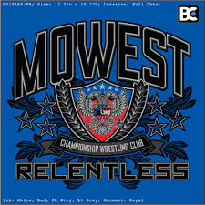

Oak Grove Wrestling
Follow the x16 Oak Grove Wrestling Program hereTyler started wrestling at the age of 5 for the Oak Grove Youth Wrestling program. He took 2nd place at Missouri Rookie State that first year. Tyler continued to train and to improve and excel as a wrestler. He holds multiple youth State, National, and All American titles. Tyler wrestled for Oak Grove Middle School his 7th and 8th grade years. He transitioned his Freshman year to High School where he held the 220 Varsity spot. He placed 3rd at the Missouri State tournament in February 2016. Currently, Tyler is still in the 220 Varsity slot and has pinned every opponent this season. He is looking forward to moving up the podium this February.

Mowest Championship Wrestling
Follow the MOWEST Championship Wrestling Program hereTyler's 7th grade season, he made a switch to train with Mowest. There he was able to train with some outstanding wrestlers that were closer to his weight. Their experience gave him the extra skills he needed to dominate most of his opponents. Tyler continues to train and compete with Mowest for the Greco and Freestyle seasons. He travels to a variety of National Duals and Tournaments.
